Unlock the BMW you already own.Sblocca la BMW che hai già.
MGU Store on your iDrive 7 or 8, installed from your Mac in a few guided steps. New cluster themes, live data, track tools and the features your car keeps hidden.MGU Store sul tuo iDrive 7 o 8, installato dal Mac in pochi passi guidati. Nuovi temi del quadro, dati in tempo reale, strumenti da pista e le funzioni che la tua auto tiene nascoste.
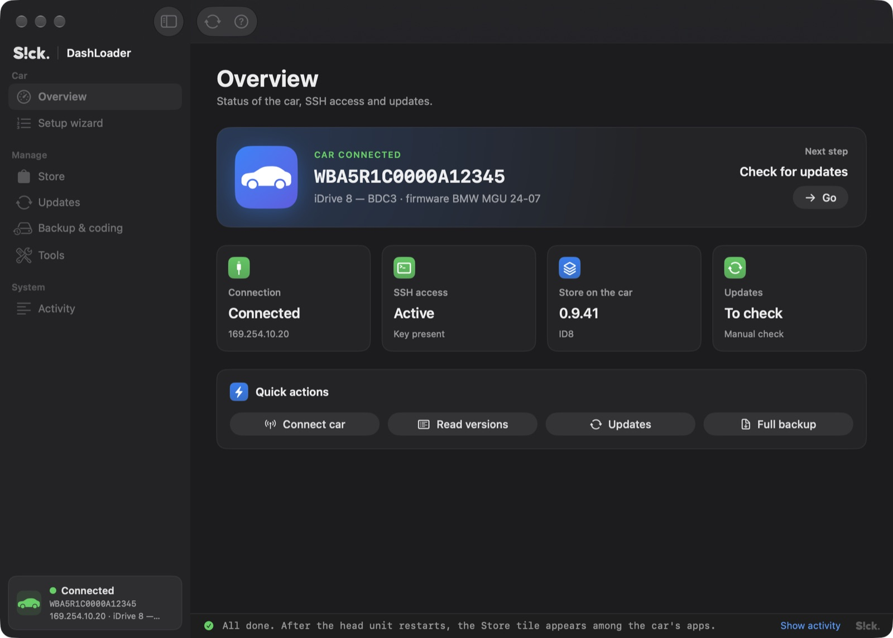
Behind your iDrive screen there's a real computer. It can run a whole app store, full of free apps made by BMW enthusiasts. Until now, getting there took a Terminal and a lot of nerve. Now it takes a Mac and a few clicks.Dietro lo schermo dell'iDrive c'è un vero computer. Può far girare un intero app store, pieno di app gratuite fatte da appassionati BMW. Finora, arrivarci voleva dire Terminale e sangue freddo. Adesso bastano un Mac e qualche clic.
The whole idea in a minute.Tutto in un minuto.
Try a cluster theme.
Right here.Prova un tema del quadro.
Qui, adesso.
Same car, same screen: tap a theme and see your instrument cluster change. These are real community themes you can install from MGU Store.Stessa auto, stesso schermo: tocca un tema e guarda il quadro strumenti cambiare. Sono temi veri della community che installi da MGU Store.
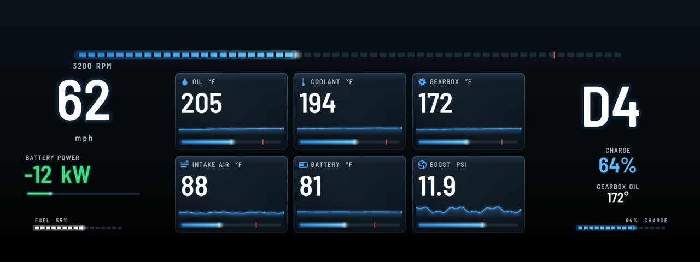
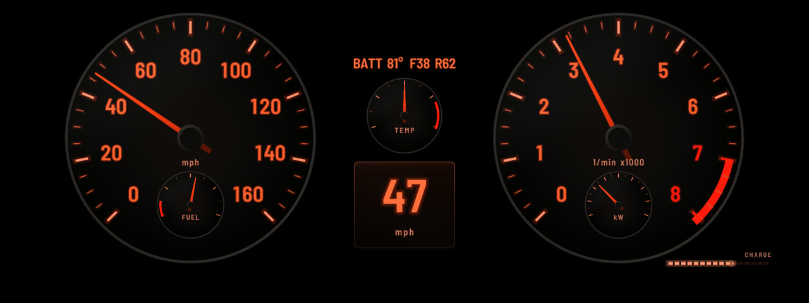
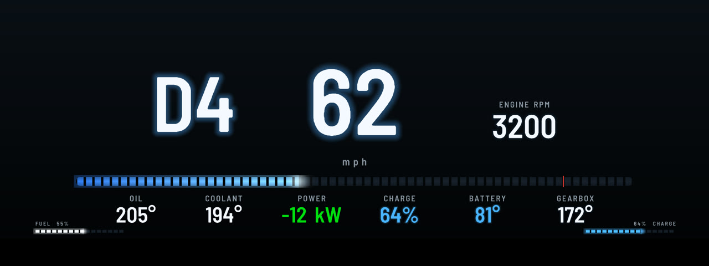
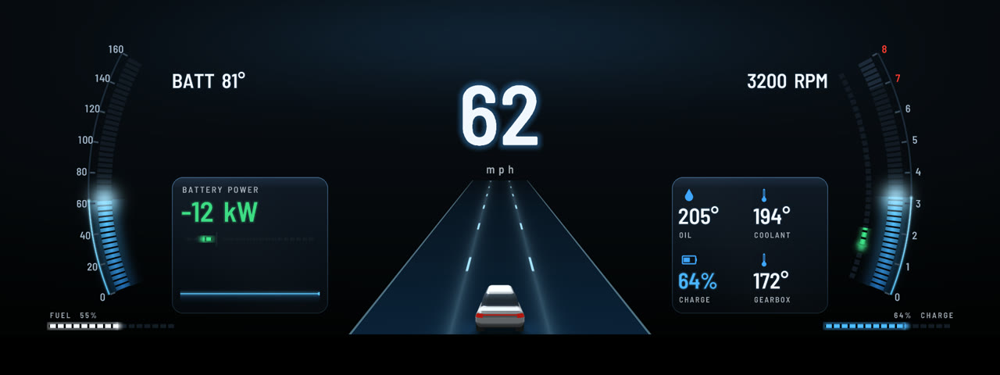
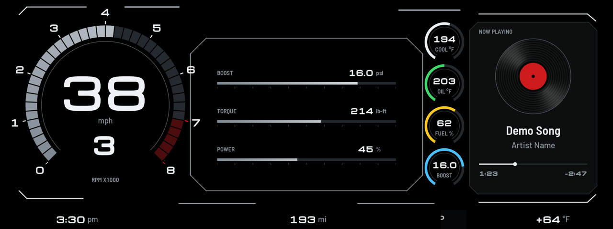
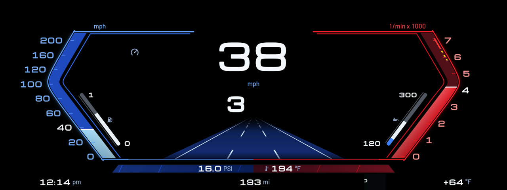
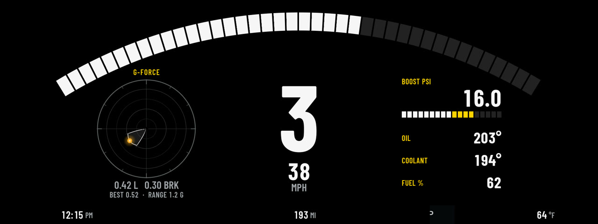
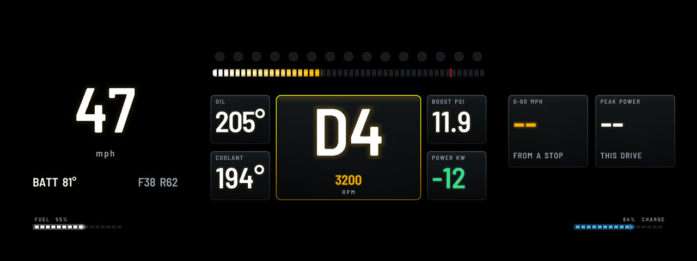
And that's just the cluster.E questo è solo il quadro.
Live engine data, shift lights and timers, seats and ambient light from the screen, games for when you're parked. Free apps by independent developers, each shown with its source.Dati del motore dal vivo, luci di cambiata e cronometri, sedili e luci ambiente dallo schermo, giochi per quando sei fermo. App gratuite di sviluppatori indipendenti, ognuna con la sua fonte.
M Vitals
Boost, temperatures and torque, live.Boost, temperature e coppia, dal vivo.
SourceFonte: github.com/cauliflowermossgrape/idrive7-apps · MIT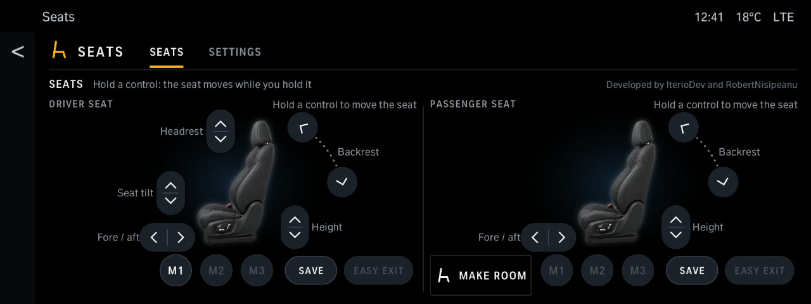
Seats
Move and save the seats from the screen.Muovi e memorizza i sedili dallo schermo.
SourceFonte: github.com/IterioDev/car-appsRedline
Shift lights and a full-screen tach.Luci di cambiata e contagiri a tutto schermo.
SourceFonte: github.com/cauliflowermossgrape/idrive7-apps · MIT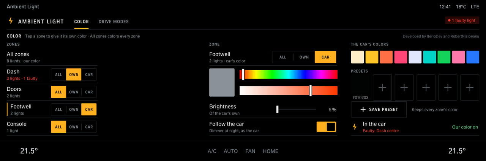
Ambient Light
Any colour, zone by zone.Qualsiasi colore, zona per zona.
SourceFonte: github.com/IterioDev/car-apps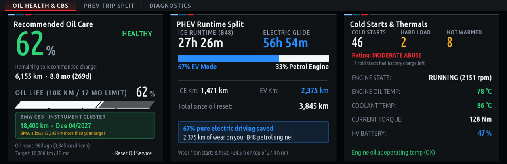
Engine Care
Oil health, cold starts, diagnostics.Salute dell'olio, partenze a freddo, diagnosi.
SourceFonte: github.com/aurelmarius/bmw-appsDrag Timer
0–100, 100–200, quarter mile.0–100, 100–200, quarto di miglio.
SourceFonte: github.com/cauliflowermossgrape/idrive7-apps · MIT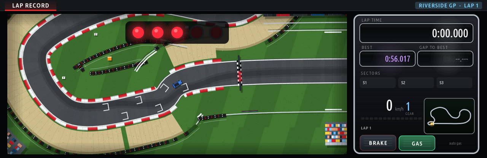
Lap Record
A racing game, for when you are parked.Un gioco di corse, per quando sei fermo.
SourceFonte: github.com/aurelmarius/bmw-games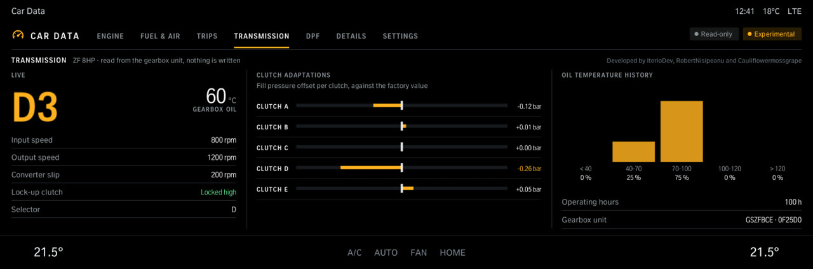
Car Data
Gearbox, clutch, engine and fuel data.Cambio, frizione, motore e carburante.
SourceFonte: github.com/IterioDev/car-appsG-Force
G-meter with your session peaks.G-meter con i picchi della sessione.
SourceFonte: github.com/cauliflowermossgrape/idrive7-apps · MIT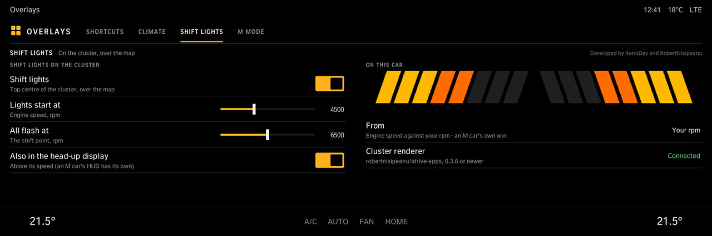
Overlays
Shift lights on the cluster and shortcuts.Luci di cambiata sul quadro e scorciatoie.
SourceFonte: github.com/IterioDev/car-apps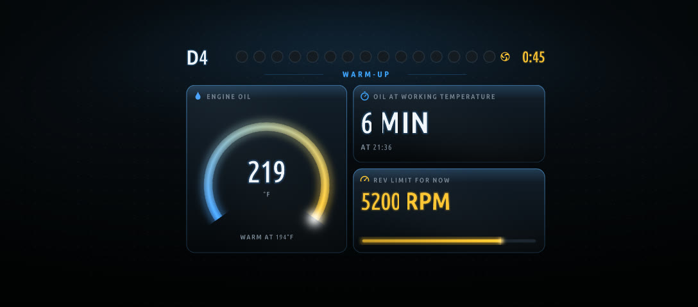
Warm-up
Know when the engine is really ready.Sai quando il motore è davvero pronto.
SourceFonte: github.com/eroobeeroo/idrive7-cluster-info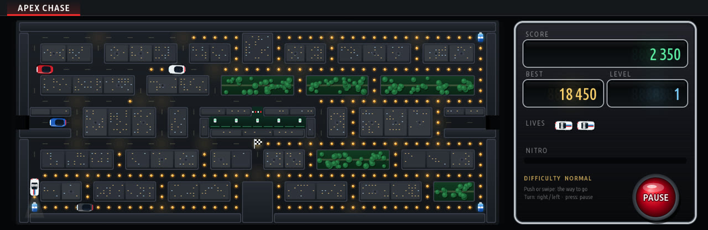
Apex Chase
Arcade chase with the iDrive controller.Inseguimento arcade col controller iDrive.
SourceFonte: github.com/aurelmarius/bmw-games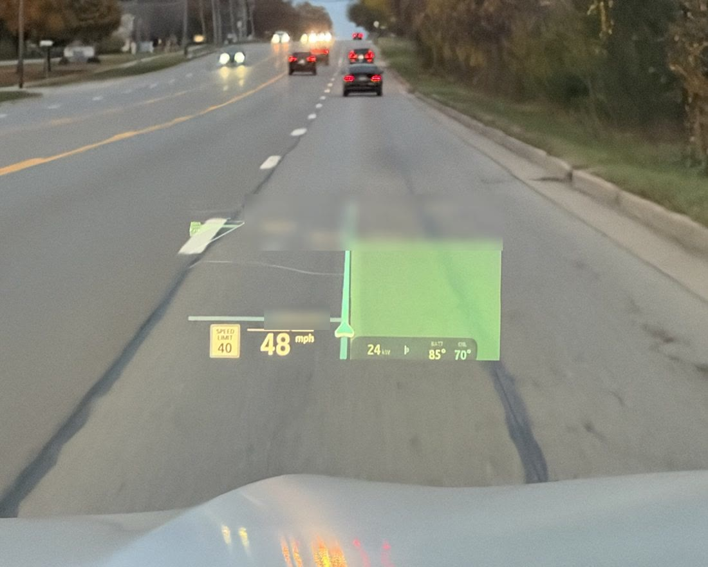
Head-up display
Apps can draw on the HUD and the cluster.Le app disegnano anche sull'HUD e sul quadro.
SourceFonte: github.com/robertnisipeanu/idrive-apps · GPL-3.0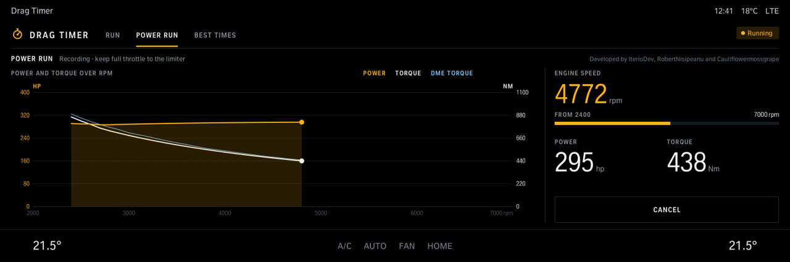
Power run
Power and torque curves from a pull.Curve di potenza e coppia da una tirata.
SourceFonte: github.com/IterioDev/car-appsThese apps are made by their authors, not by us. Which iDrive each one supports is shown in the Store. Games are for when the car is parked.Queste app sono fatte dai loro autori, non da noi. Per quale iDrive è ognuna lo trovi nello Store. I giochi sono per quando l'auto è ferma.
Eight steps. Each one
unlocks the next.Otto passi. Ognuno
sblocca il successivo.
Plug an ENET cable into the car and follow the wizard. The app runs the open-source tools for you and never skips ahead.Colleghi un cavo ENET all'auto e segui la procedura. L'app usa gli strumenti open source al posto tuo e non salta mai un passo.
WelcomeBenvenuto
What you're about to do, and what to have ready.Cosa stai per fare, e cosa tenere pronto.
ToolsStrumenti
It checks Python and Node.js and prepares everything else by itself.Controlla Python e Node.js e prepara da solo tutto il resto.
ConnectConnetti
Ignition on, cable in: the app finds the head unit and reads the VIN from the car.Quadro acceso, cavo collegato: l'app trova l'unità e legge il VIN dall'auto.
- MandatoryObbligatorio
Backup
An automatic capture plus your coding backup with BimmerCode. Nothing moves on without both.Una cattura automatica più il backup della codifica con BimmerCode. Senza entrambi non si va avanti.
- Once onlyUna sola volta
Enable SSHAbilita SSH
One flash opens access to the head unit. The app never repeats it.Un flash apre l'accesso all'unità. L'app non lo ripete mai.
RestoreRipristino
Your coding goes back from your backup; from then on the app saves it over SSH by itself.La tua codifica torna dal backup; da lì in poi l'app la salva via SSH da sola.
InstallInstalla
One click installs MGU Store with its updater, then restarts the head unit.Un clic installa MGU Store con il suo updater, poi riavvia l'unità.
FinishFine
The MGU Store tile appears in your car. Start picking apps.Il riquadro di MGU Store compare nell'auto. Inizia a scegliere le app.
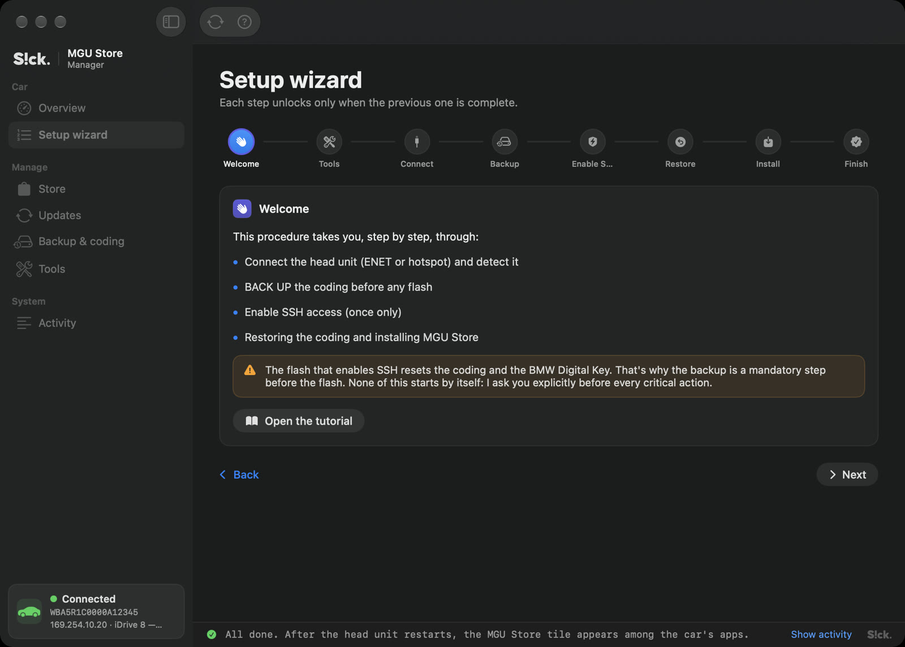
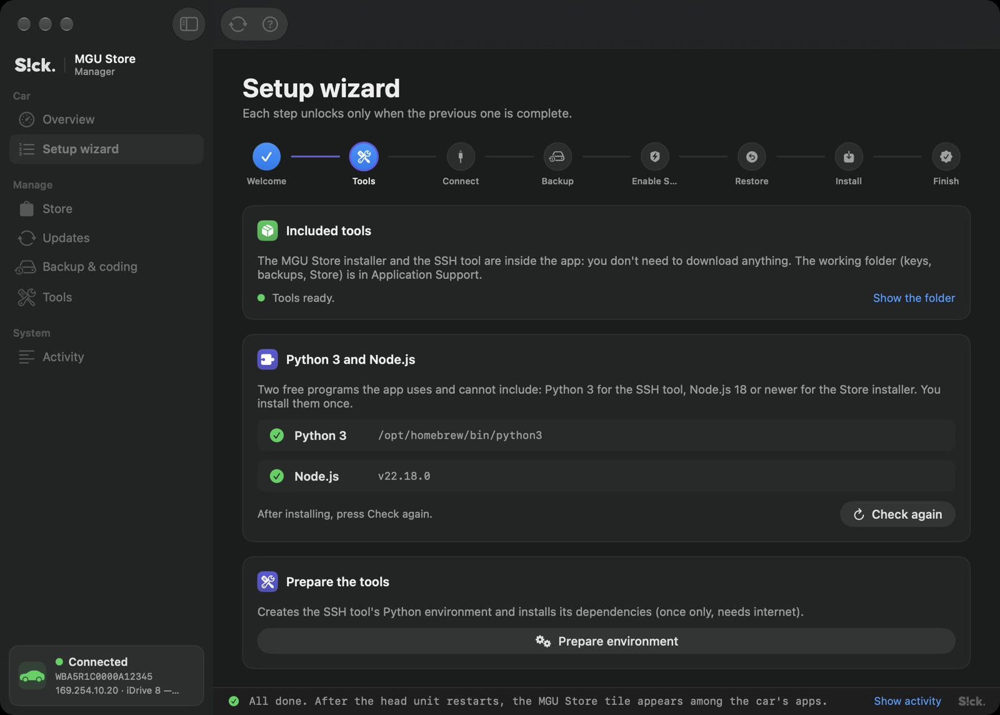
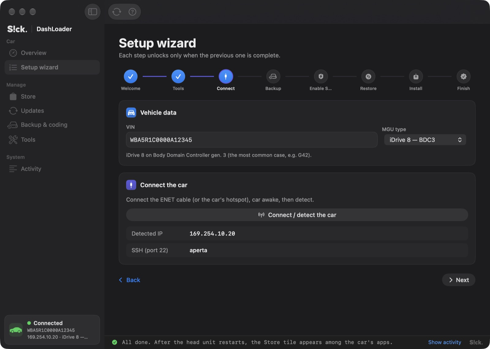
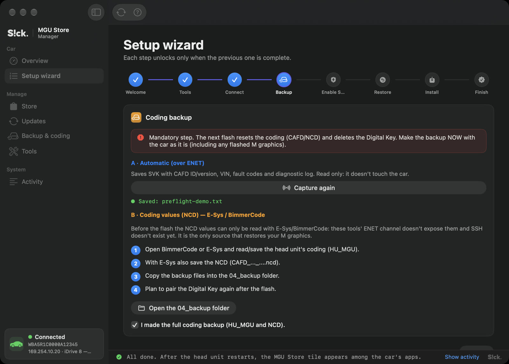
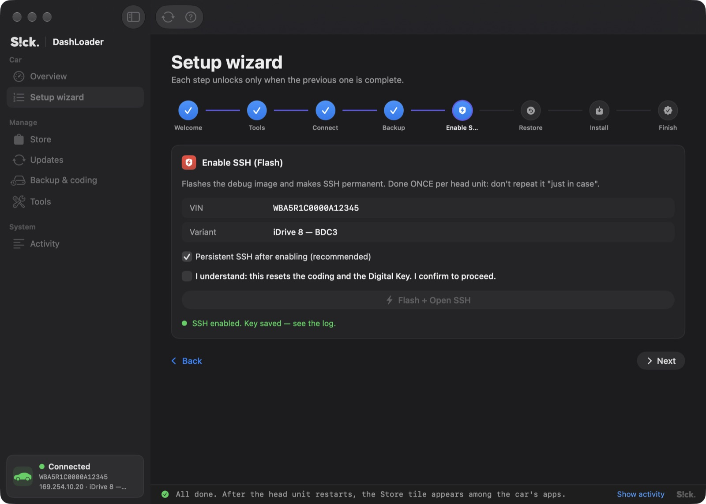
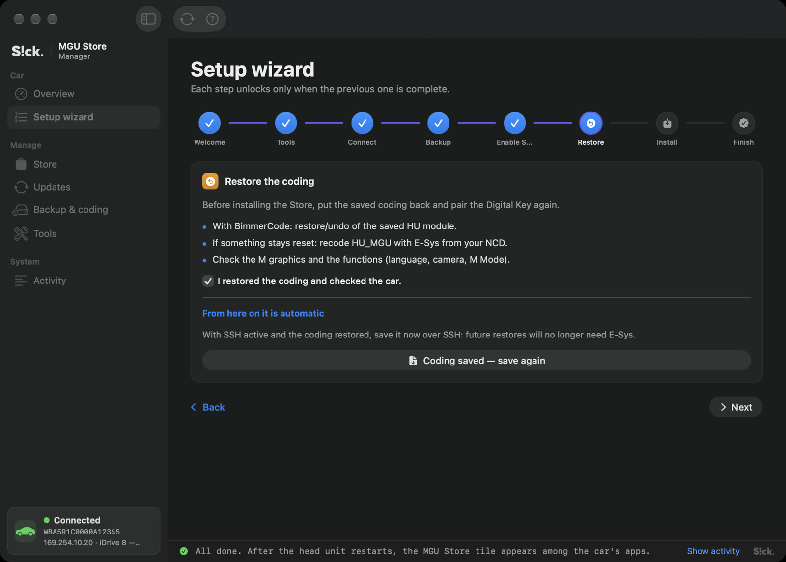
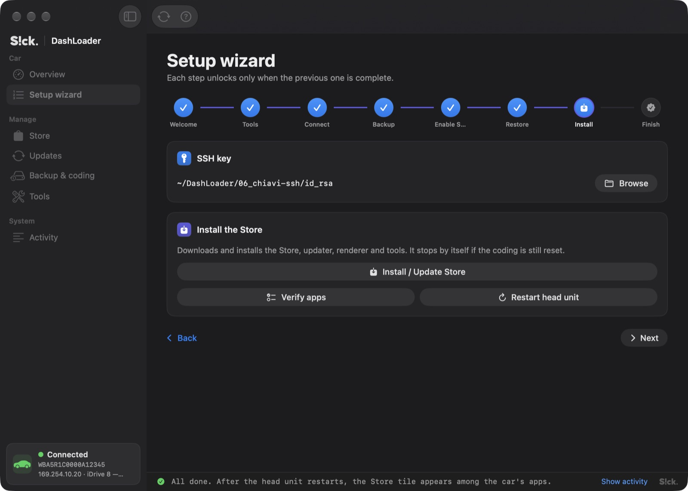
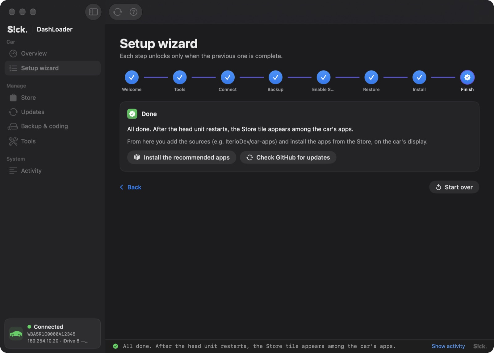
Built so you can't
mess it up.Fatto perché tu
non possa sbagliare.
Your OK, firstPrima il tuo ok
Every action that writes to the car asks you first, and the bar at the bottom always tells you when the app is working on it.Ogni azione che scrive sull'auto ti chiede prima conferma, e la barra in basso ti dice sempre quando l'app ci sta lavorando.
Backup before anythingBackup prima di tutto
The wizard won't let you flash without a coding backup, and it makes a full backup before every update.La procedura non ti fa fare il flash senza il backup della codifica, e fa un backup completo prima di ogni aggiornamento.
Everything reversibleTutto reversibile
Store changes are snapshotted and can be undone. Coding comes back from your backup. No restore ever needs a new flash.Le modifiche dello Store sono salvate e si possono annullare. La codifica torna dal tuo backup. Nessun ripristino richiede un nuovo flash.
From xDrive to rear-wheel drive.
In two taps.Da xDrive a trazione posteriore.
In due tocchi.
Drive switches an iDrive 8 xDrive BMW with a longitudinal engine to rear-wheel drive, from the central display. Parked, engine off, two taps. Switch the car off and xDrive is back: nothing coded, nothing flashed.Drive porta una BMW xDrive con iDrive 8 e motore longitudinale alla trazione posteriore, dallo schermo centrale. Auto ferma, motore spento, due tocchi. Spegni l'auto e torna l'xDrive: niente codifica, niente flash.
Experimental · private ground and track onlySperimentale · solo aree private e pistaNot for front-wheel-drive based models (1 Series F40, 2 Series Gran Coupé F44 and Active Tourer, X1, X2).Non per i modelli a trazione anteriore di base (Serie 1 F40, Serie 2 Gran Coupé F44 e Active Tourer, X1, X2).
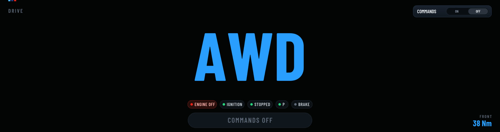
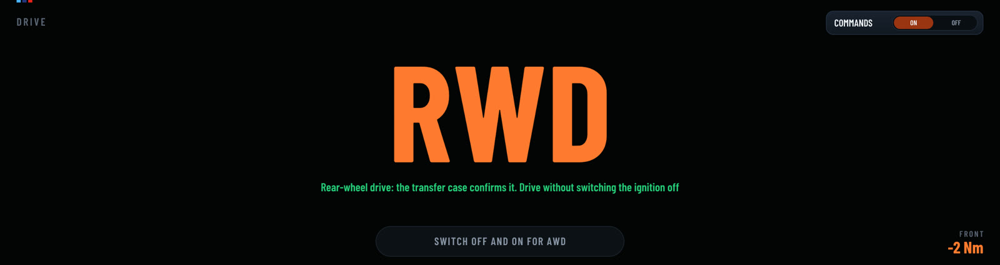
Before · AWDPrima · AWDAfter · RWDDopo · RWDDrag to compareTrascina per confrontare
One licence.
Your Mac and your car.Una licenza.
Il tuo Mac e la tua auto.
Each licence covers one Mac and one car (VIN). Prices include VAT.Ogni licenza copre un Mac e un'auto (VIN). Prezzi IVA inclusa.
MonthlyMensile
- 1 Mac + 1 car1 Mac + 1 auto
- Store setup and appsInstallazione Store e app
- Updates in the periodAggiornamenti del periodo
QuarterlyTrimestrale
- 1 Mac + 1 car1 Mac + 1 auto
- Time for setup and your first appsIl tempo per installare e provare le app
- Updates in the periodAggiornamenti del periodo
YearlyAnnuale
- 1 Mac + 1 car1 Mac + 1 auto
- Keep apps and Store up to dateApp e Store sempre aggiornati
- Updates in the periodAggiornamenti del periodo
WorkshopOfficina · €499 / yearanno
For tuners and garages: one Mac, up to 10 cars a year.Per preparatori e officine: un Mac, fino a 10 auto all'anno.
Secure payment by Stripe: card, Apple Pay, Google Pay. By buying you accept the terms of sale. The licence is digital content delivered right away: see right of withdrawal.Pagamento sicuro con Stripe: carta, Apple Pay, Google Pay. Acquistando accetti le condizioni di vendita. La licenza è un contenuto digitale consegnato subito: vedi diritto di recesso.
Good questions.Domande giuste.
Which cars does it work with?Con quali auto funziona?
Do I need to know coding or Terminal?Devo saper programmare o usare il Terminale?
Is it safe? Can I undo it?È sicuro? Posso tornare indietro?
What about my warranty?E la garanzia?
Are the apps included?Le app sono comprese?
Can I use it on more than one car?Posso usarla su più auto?
What happens when my licence ends?Cosa succede quando la licenza scade?
Windows? A new Mac?Windows? Un Mac nuovo?
More in the full guide and the troubleshooting page. Already using it? Tell us how it went.Altro nella guida completa e nella pagina dei problemi. La usi già? Raccontaci com'è andata.